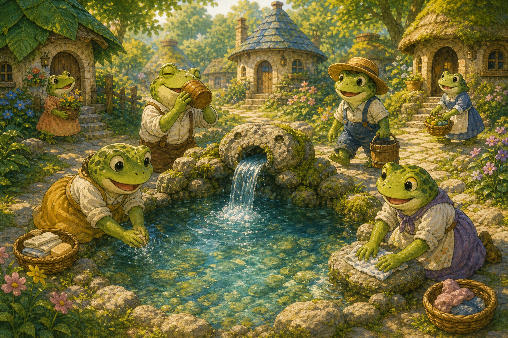
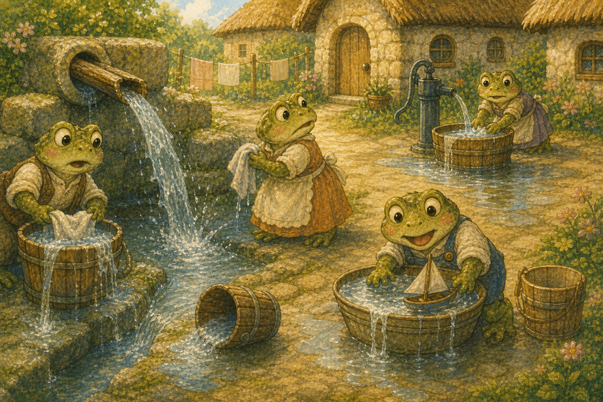
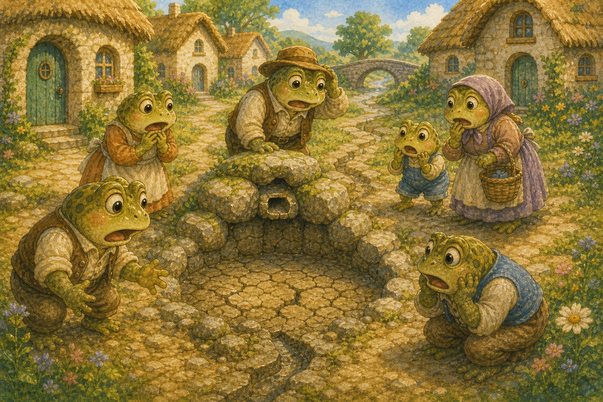
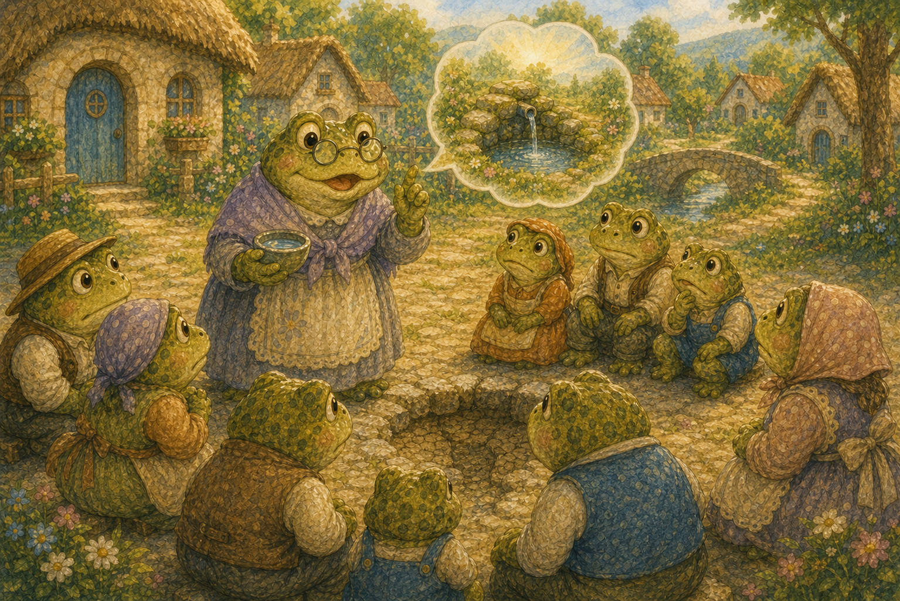
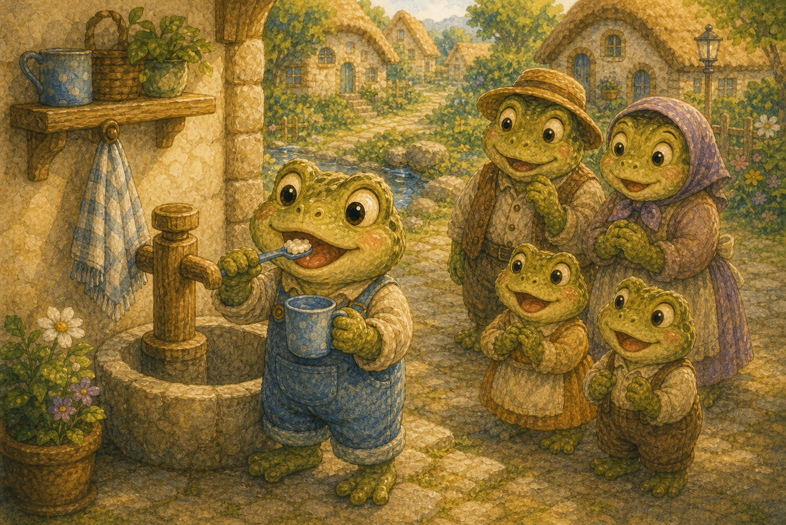
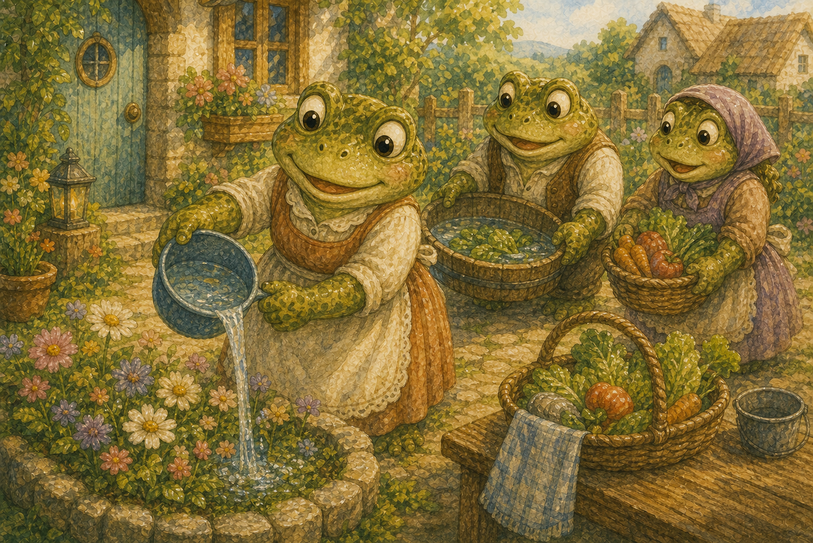
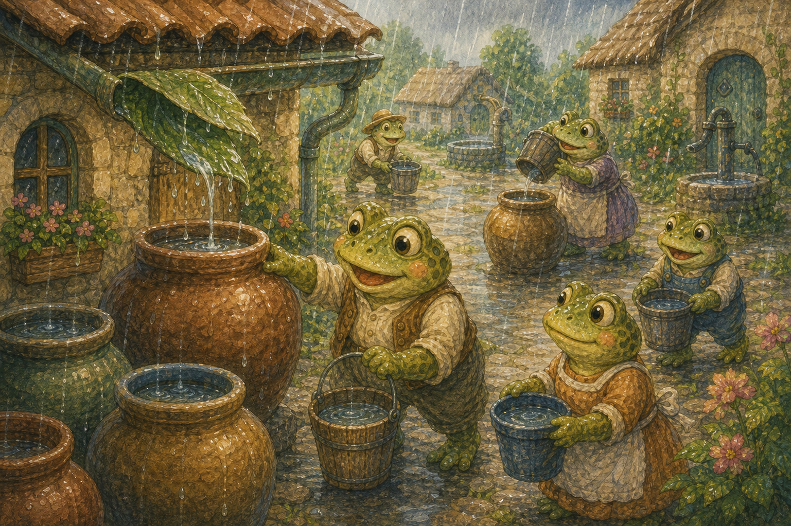
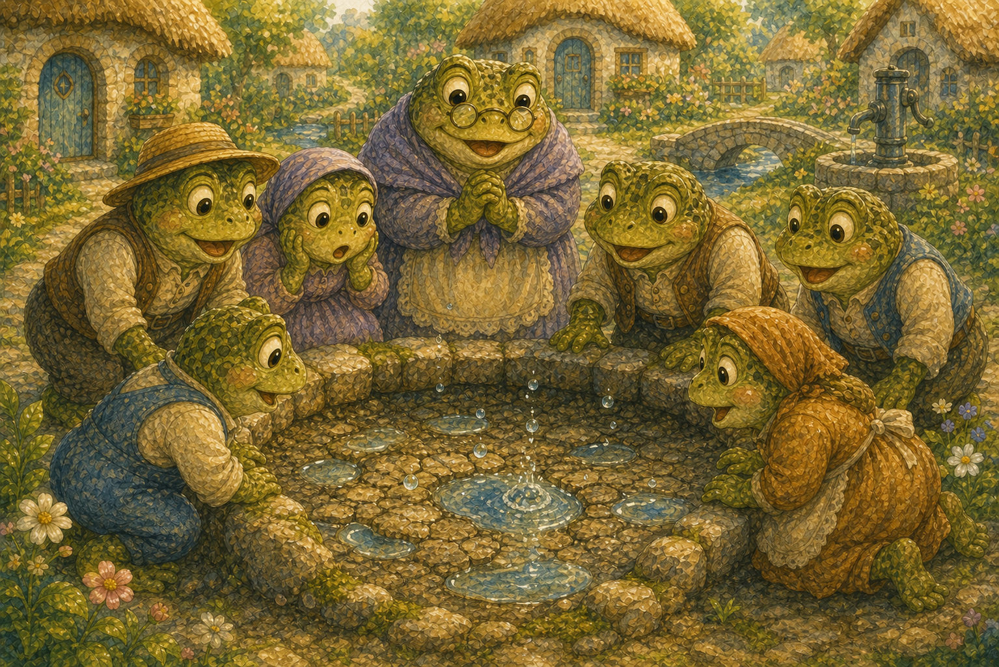
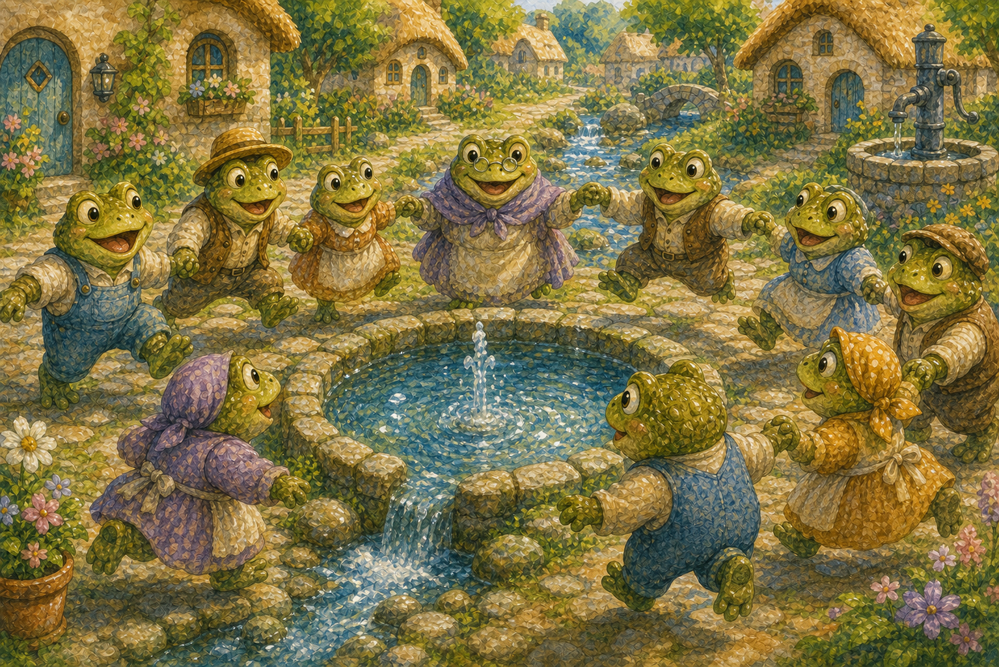
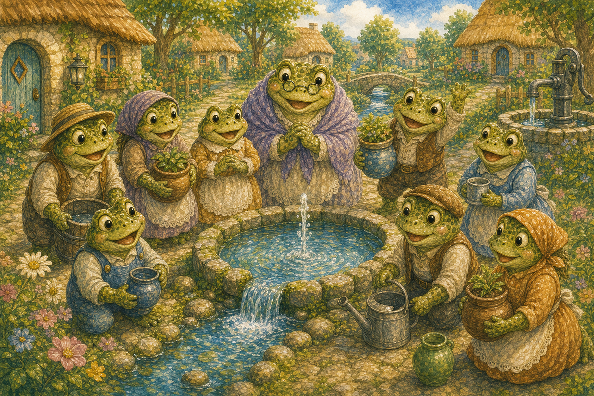

졸졸 마을 샘
두꺼비 마을 한가운데에는 맑은 샘이 졸졸 흘렀어요. 마을 친구들은 그 물로 마시고 씻으며 살았지요.
"우리 샘은 언제나 맑아!"

두꺼비 마을 한가운데에는 맑은 샘이 졸졸 흘렀어요. 마을 친구들은 그 물로 마시고 씻으며 살았지요.
"우리 샘은 언제나 맑아!"

하지만 친구들은 물을 펑펑 틀어 놓고 흘려보냈어요. 쓰지 않을 때도 물은 콸콸 흘러갔지요.
"물은 끝없이 나오는걸, 뭐."

어느 여름날, 샘이 바짝 말라 바닥을 드러냈어요. 마을 친구들은 깜짝 놀라 발만 동동 굴렀지요.
"물이 한 방울도 안 나와!"

지혜로운 할머니 두꺼비가 친구들을 불러 모았어요. 물은 소중하니 아껴 쓰면 다시 차오른다고 했지요.
"한 방울도 아껴 쓰자꾸나."

친구들은 양치할 때 컵에 물을 받아 썼어요. 틀어 놓지 않으니 물이 훨씬 덜 들었지요.
"이렇게만 해도 많이 아껴져!"

채소 씻은 물은 버리지 않고 화단에 주었어요. 한 번 쓴 물도 다시 쓸 수 있었답니다.
"물도 두 번 일할 수 있구나!"

비가 오는 날에는 큰 항아리에 빗물을 모았어요. 모인 빗물로 청소도 하고 꽃에도 주었지요.
"하늘이 준 물도 알뜰히!"

모두가 아껴 쓰자 마른 샘에 물이 조금씩 고이기 시작했어요. 작은 물방울이 톡톡 솟아올랐지요.
"어! 샘이 다시 살아나고 있어!"

며칠 뒤 샘은 다시 맑게 졸졸 흘렀어요. 친구들은 손을 맞잡고 깡충깡충 기뻐했지요.
"우리가 함께 샘을 살렸어!"

마을 친구들은 물 한 방울도 소중하다는 걸 알았어요. 이제 모두가 물을 아끼며 맑은 샘을 지킨답니다.
"한 방울도 아끼면 모두가 행복해!"